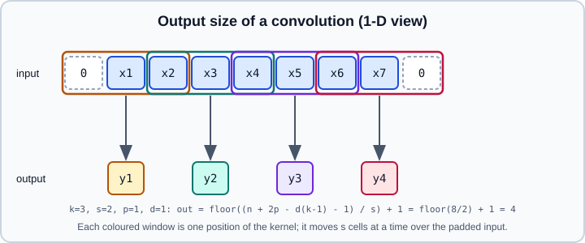

Linear, Convolution & Pooling Layers
|
This content was generated with the assistance of AI and should be verified against the official documentation before being relied on in production. |
Most of a feed-forward or convolutional network is a handful of layer types from torch.nn: affine (linear) layers that mix features, convolutions that mix features locally and share weights across positions, and pooling layers that reduce resolution. Each takes tensors of a specific shape and returns a specific shape, and almost every beginner error in this area is a shape or layout mistake. This page lists the layers, the shape rules and output-size formulas, the arguments that matter, and the traps. The theory of convolution is in Convolutional Neural Networks; a complete model is built in Worked Example: CNN Image Classifier.
Examples were run on Python 3.13 with PyTorch 2.15 (CPU) on 2026-10-31. The shapes in the comments are what the run printed. Every module is a subclass of nn.Module (see nn.Module); the stateless counterparts live in torch.nn.functional.
Linear layers
nn.Linear(in_features, out_features, bias=True) computes \(y = x W^\top + b\) on the last dimension and treats every leading dimension as batch. The weight has shape (out_features, in_features) and the bias (out_features,).
import torch
import torch.nn as nn
import torch.nn.functional as F
print(nn.Linear(10, 4)(torch.randn(2, 7, 10)).shape) # torch.Size([2, 7, 4])
print(nn.Linear(10, 4, bias=False).bias) # None
print(nn.Bilinear(3, 5, 2)(torch.randn(6, 3), torch.randn(6, 5)).shape) # torch.Size([6, 2])
print(nn.Flatten()(torch.randn(2, 3, 4, 5)).shape) # torch.Size([2, 60])
print(nn.Unflatten(1, (3, 4))(torch.randn(2, 12)).shape) # torch.Size([2, 3, 4])-
nn.Linearon a(batch, seq, features)tensor applies the same weights at every position, which is how transformers project tokens. -
nn.Bilinear(in1, in2, out)computes \(y = x_1^\top A x_2 + b\) for each output feature, a multiplicative interaction between two inputs. -
nn.Identityreturns its input and is useful as a placeholder (for example to replace a classification head with "no head"). -
nn.Flatten(start_dim=1, end_dim=-1)keeps the batch dimension and flattens the rest, the usual bridge from convolutional features to a linear classifier;nn.Unflattenreverses it. -
nn.LazyLinear(out_features)infersin_featureson the first call (see nn.Module). -
By default the weights are drawn from a uniform distribution on \([-1/\sqrt{d_\text{in}}, 1/\sqrt{d_\text{in}}]\), where \(d_\text{in}\) is
in_features; other schemes are intorch.nn.init.
Parameter count: in_features * out_features + out_features (with bias). A convolution with a 1x1 kernel is mathematically a linear layer applied at each pixel; the executed check confirmed that an nn.Conv2d(3, 4, 1) equals an nn.Linear(3, 4) applied on the channels-last permutation of the same input.
Convolution layers
nn.Conv2d(in_channels, out_channels, kernel_size, stride=1, padding=0, dilation=1, groups=1, bias=True, padding_mode='zeros') slides out_channels filters over the input. Despite the name it computes a cross-correlation, so the kernel is not flipped, and the same weights are reused at every spatial position. The input is (N, C_in, H, W) and the output (N, C_out, H_out, W_out); an unbatched (C_in, H, W) input is also accepted. The weight has shape (C_out, C_in / groups, kH, kW) and the bias (C_out,). nn.Conv1d (sequences, audio, time series) and nn.Conv3d (volumes, video) follow the same rules with one and three spatial dimensions.
c = nn.Conv2d(3, 16, kernel_size=3, stride=2, padding=1)
x = torch.randn(8, 3, 32, 32)
print(c(x).shape, c.weight.shape, c.bias.shape)
# torch.Size([8, 16, 16, 16]) torch.Size([16, 3, 3, 3]) torch.Size([16])
print(sum(p.numel() for p in c.parameters())) # 448 = 3*16*3*3 + 16
print(nn.Conv1d(4, 6, 5)(torch.randn(2, 4, 50)).shape) # torch.Size([2, 6, 46])
print(nn.Conv3d(1, 2, 3)(torch.randn(2, 1, 8, 8, 8)).shape) # torch.Size([2, 2, 6, 6, 6])Output size
For each spatial dimension with input size \(n\), kernel \(k\), stride \(s\), padding \(p\) and dilation \(d\):
\[ n_\text{out} = \left\lfloor \frac{n + 2p - d (k - 1) - 1}{s} \right\rfloor + 1 \]

For n=32, k=3, s=2, p=1 this gives 16, as printed above. Stride greater than one is the learnable way to downsample; padding keeps the border pixels from being under-represented and controls shrinkage.
Arguments in detail
-
paddingcan be an integer, a tuple,'valid'(no padding, the default) or'same'. With'same'the output has the input’s spatial size (for stride 1); it is not allowed withstride > 1(the executed snippet raisedValueError: padding='same' is not supported for strided convolutions). With an even kernel size,'same'pads asymmetrically and may need a zero-padded copy of the input, which triggers aUserWarningand costs memory. -
padding_modeis'zeros'(default),'reflect','replicate'or'circular'; the non-zero modes pad the input explicitly before the convolution. Reflection avoids the dark borders that zero padding creates in image-to-image models. -
dilationinserts gaps in the kernel and enlarges the receptive field without extra parameters. A 3x3 kernel withdilation=2covers a 5x5 area; withpadding=2the output keeps the input size. -
groupssplits the channels into independent groups.groups=1is a dense convolution,groups=C_in(withC_outa multiple ofC_in) is a depthwise convolution with a weight of shape(C_out, 1, kH, kW). Depthwise followed by a 1x1 convolution is the depthwise-separable convolution of mobile architectures. The executed snippet printed a depthwise weight of shape[3, 1, 3, 3]. -
bias=Falseis standard when a batch-normalization layer follows, because the normalization removes any constant shift. -
nn.LazyConv2d(out_channels, kernel_size)infersin_channelsat the first call. -
A mismatch between the input’s channel count and
in_channelsraisesRuntimeError: Given groups=1, weight of size [4, 3, 3, 3], expected input[1, 1, 8, 8] to have 3 channels, but got 1 channels instead. A grey-scale image needsin_channels=1.
print(nn.Conv2d(3, 8, 3, padding="same")(x).shape) # [8, 8, 32, 32]
print(nn.Conv2d(3, 8, 3, padding="valid")(x).shape) # [8, 8, 30, 30]
print(nn.Conv2d(3, 8, 3, padding=2, dilation=2)(x).shape) # [8, 8, 32, 32]
print(nn.Conv2d(3, 3, 3, groups=3)(x).shape) # [8, 3, 30, 30]
print(nn.Conv2d(3, 8, 3, padding=1, padding_mode="reflect")(x).shape) # [8, 8, 32, 32]Convolution as matrix multiplication
A convolution is a linear map. F.unfold (the module nn.Unfold) extracts every sliding block as a column, and a single matrix product with the flattened kernels reproduces the convolution. The check below is how many libraries implement convolutions and is useful to understand what the weight tensor means:
w = torch.randn(5, 3, 3, 3)
xi = torch.randn(1, 3, 6, 6)
cols = F.unfold(xi, 3) # (1, 27, 16): 3*3*3 values per block, 16 blocks
manual = (w.view(5, -1) @ cols).view(1, 5, 4, 4)
print(torch.allclose(manual, F.conv2d(xi, w), atol=1e-5)) # TrueTransposed convolution and upsampling
nn.ConvTranspose2d (sometimes called deconvolution, though it is not the mathematical inverse) maps a smaller feature map to a larger one by distributing each input value over a kernel-sized area. Its output size is
\[ n_\text{out} = (n - 1)\,s - 2p + d (k - 1) + p_\text{out} + 1 \]
Here \(p_\text{out}\) is the output_padding argument. With stride greater than one, several input sizes map to the same output size in a regular convolution, so output_padding selects which size you get back.
t = nn.ConvTranspose2d(16, 8, kernel_size=3, stride=2, padding=1, output_padding=1)
print(t(torch.randn(1, 16, 16, 16)).shape) # torch.Size([1, 8, 32, 32])
print(nn.ConvTranspose2d(16, 8, 3, stride=2, padding=1)(torch.randn(1, 16, 16, 16)).shape)
# torch.Size([1, 8, 31, 31]): without output_padding the size is 31Transposed convolutions with a kernel size not divisible by the stride produce checkerboard artifacts in generated images. A common alternative is nn.Upsample (nearest or bilinear) followed by a regular convolution, or nn.PixelShuffle(r), which rearranges a (N, C*r*r, H, W) tensor into (N, C, H*r, W*r) and is used for sub-pixel convolution in super-resolution. The executed snippets printed [1, 2, 8, 8] for PixelShuffle(2) applied to (1, 8, 4, 4) and [8, 3, 64, 64] for Upsample(scale_factor=2, mode="bilinear", align_corners=False) on a (8, 3, 32, 32) input. Generative uses are discussed in Generative Models.
Pooling layers
Pooling summarizes each window by one number, reducing resolution and adding a little translation invariance, without learnable parameters.
-
nn.MaxPool1d/2d/3d(kernel_size, stride=None, padding=0, dilation=1, return_indices=False, ceil_mode=False): keeps the maximum.stridedefaults tokernel_size. Gradients flow only to the position of the maximum: in the executed check, a 2x2 input[[1, 5], [3, 2]]received gradient[0, 1, 0, 0]. -
nn.AvgPool1d/2d/3d(kernel_size, stride=None, padding=0, ceil_mode=False, count_include_pad=True): averages. With padding,count_include_pad=Truecounts the zero padding in the denominator; in the executed check a 3x3 window at the corner of an all-ones 4x4 input gave 0.444 withTrueand 1.0 withFalse. -
nn.AdaptiveAvgPool2d(output_size)andnn.AdaptiveMaxPool2d(output_size): you specify the output size and PyTorch chooses the windows.AdaptiveAvgPool2d(1)is global average pooling, which makes a classifier independent of the input resolution.Nonefor a dimension keeps its size. -
nn.LPPool,nn.FractionalMaxPool2d,nn.MaxUnpool2d(inverts max pooling using the saved indices) complete the family.
print(nn.MaxPool2d(2)(x).shape) # [8, 3, 16, 16]
print(nn.MaxPool2d(3, stride=2)(torch.randn(1, 1, 8, 8)).shape) # [1, 1, 3, 3]
print(nn.MaxPool2d(3, stride=2, ceil_mode=True)(torch.randn(1, 1, 8, 8)).shape) # [1, 1, 4, 4]
print(nn.AdaptiveAvgPool2d(1)(torch.randn(2, 64, 7, 9)).shape) # [2, 64, 1, 1]
print(nn.AdaptiveAvgPool2d((3, 3))(torch.randn(2, 64, 7, 9)).shape) # [2, 64, 3, 3]
v, idx = nn.MaxPool2d(2, return_indices=True)(x)
print(idx.dtype, nn.MaxUnpool2d(2)(v, idx).shape) # torch.int64 [8, 3, 32, 32]Source: https://docs.pytorch.org/docs/stable/generated/torch.nn.MaxPool2d.html and https://docs.pytorch.org/docs/stable/generated/torch.nn.AdaptiveAvgPool2d.html
ceil_mode=True rounds the output size up instead of down, adding a partial window at the border. Modern architectures often replace max pooling by strided convolutions and finish with global average pooling (AdaptiveAvgPool2d(1) followed by Flatten), so the classifier head does not depend on the image size.
A small convolutional stack
class SmallCNN(nn.Module):
def __init__(self, num_classes=10):
super().__init__()
self.features = nn.Sequential(
nn.Conv2d(3, 32, 3, padding=1, bias=False),
nn.BatchNorm2d(32),
nn.ReLU(inplace=True),
nn.MaxPool2d(2), # 32 -> 16
nn.Conv2d(32, 64, 3, padding=1, bias=False),
nn.BatchNorm2d(64),
nn.ReLU(inplace=True),
nn.AdaptiveAvgPool2d(1), # any input size -> 1x1
)
self.classifier = nn.Linear(64, num_classes)
def forward(self, x):
return self.classifier(torch.flatten(self.features(x), 1))
print(SmallCNN()(torch.randn(8, 3, 32, 32)).shape) # torch.Size([8, 10])Normalization, dropout and activation layers used here are on Embeddings, Normalization, Dropout & Activations. The SmallCNN class is an illustrative composition of documented layers; it was not trained for this page, and the executed check covered only the layer shapes above.
Memory format and performance
By default tensors use the contiguous NCHW layout. On many GPUs (and some CPUs), convolutions are faster in the channels_last memory format (NHWC order in memory, while the logical shape stays (N, C, H, W)). Convert both the module and the input; the executed snippet confirmed that the output of a convolution fed a channels-last input is itself channels-last and that module.to(memory_format=torch.channels_last) converts the weight.
c2 = c.to(memory_format=torch.channels_last)
xcl = x.to(memory_format=torch.channels_last)
print(c2(xcl).is_contiguous(memory_format=torch.channels_last)) # TrueWhether channels-last helps depends on hardware, dtype and library (it is usually combined with mixed precision); measure it with the profiler (see Performance Tuning and Mixed Precision).
Common pitfalls
-
Passing
(N, H, W, C)image arrays (the NumPy, PIL and TensorFlow convention) to a convolution that expects(N, C, H, W); permute withx.permute(0, 3, 1, 2). -
Forgetting the batch dimension; unbatched input is accepted by convolutions but not by every layer in a model, notably batch normalization.
-
Computing
in_featuresof the first linear layer by hand after several convolution and pooling layers; useAdaptiveAvgPool2d,LazyLinear, or run a dummy input through the feature extractor and read the shape. -
Using
padding='same'withstride > 1(an error) or with an even kernel (asymmetric padding, a warning). -
Expecting
ConvTranspose2dto restore the exact size of the previous convolution withoutoutput_padding. -
Using a pooling window larger than the input, or
ceil_modeand padding combinations that produce unexpected sizes; print the shape at each stage while designing a network. -
Applying
nn.Softmaxbeforenn.CrossEntropyLoss; the loss expects raw logits (see Loss Functions). -
Keeping
bias=Truein a convolution followed by batch norm: harmless but wasteful.